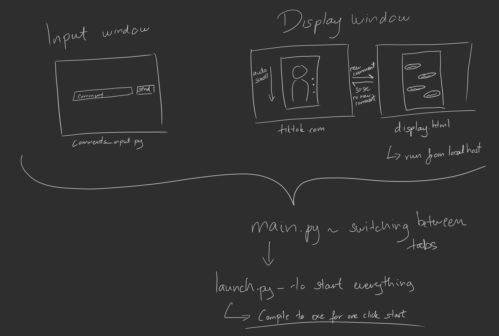

For Production 3, I helped a classmate bring her exhibition concept to life: a silicone face with TikTok videos and comments projected onto it. I was responsible for developing the software behind this interaction and helping prepare the technical setup for the exhibition.
Overview
During Production 3, one of my classmates approached me for technical assistance with her exhibition. Her concept involved projecting TikTok content and online comments onto a silicone face. Initially, she considered scraping comments from TikTok videos, but given my limited experience with this and the time available, I suggested an alternative: allowing visitors to enter their own comments, which would then appear as part of the projection.
Designing the setup
I proposed a two-display setup to separate the projected content from visitor interaction. One display handled the TikTok content and comments, while the second allowed visitors to enter comments through a Wacom tablet. Using a tablet rather than a regular monitor meant that the input device could be laid flat, keeping it from obstructing the viewing space around the sculpture. My classmate designed the visual appearance of the comments interface, which I recreated in HTML and integrated into the setup.
Module Overview
My initial plan. The only change was to replace TikTok's automatic scrolling with scrolling handled by `main.py`, allowing it to happen more frequently and at random intervals to imitate a person browsing.

Team work makes the dream work
We tested the software together and adjusted the presentation based on how it looked when projected onto the face. This included experimenting with the size and boldness of the comments to make them readable, as well as changing where they first appeared. Initially, comments spawned around the nose, where they were difficult to read, so I moved their starting position towards the forehead.
Troubleshooting
During our first classroom demonstration, the software failed because TikTok had changed something internally, breaking the way I accessed its interface buttons. I had to rework this part to make it more reliable and easier to fix if it failed again during the exhibition. I also considered how the software would be operated in practice. Since several applications and processes had to be started in a specific order, I compiled them into a single launcher executable.
Beyond the software itself, I helped prepare the exhibition setup, including troubleshooting the NDI projection setup and adjusting the room conditions. On the exhibition day, everything worked as expected, and visitors interacted with the installation.
What did I learn
Looking back, I see that my contribution went beyond implementing what my classmate initially envisioned. Understanding her artistic intention allowed me to suggest alternative approaches and make technical decisions that supported the experience she wanted to create. At the same time, her feedback during testing shaped the software in ways I would not have considered on my own. This showed me how technical support can become a collaborative process, where both the artist's understanding of their work and my technical knowledge contribute to the solution.